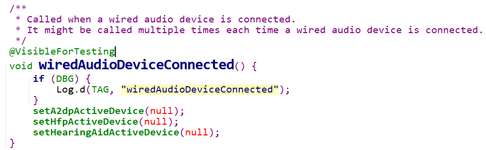
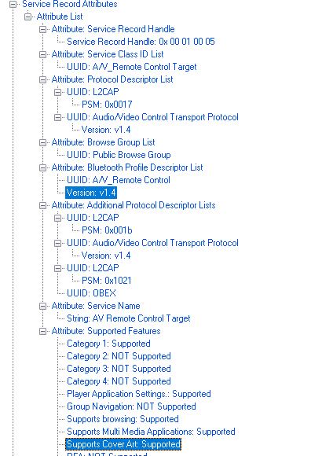
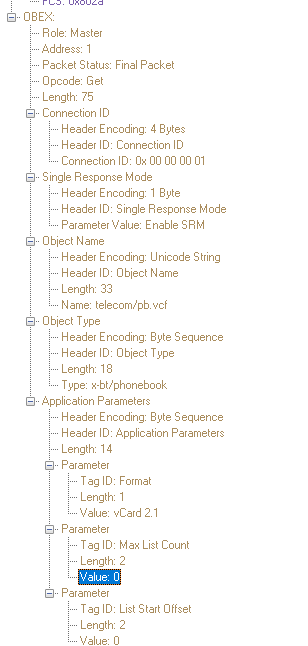
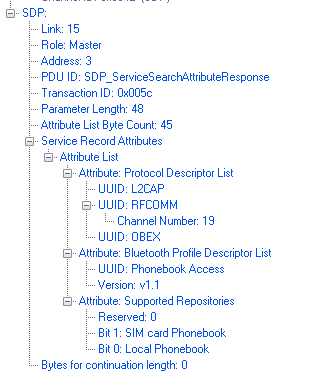
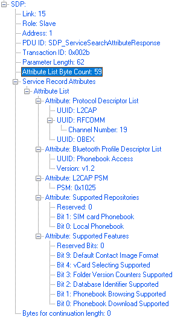
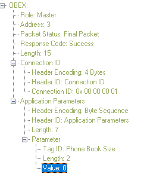
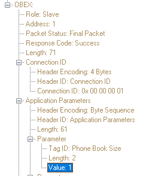
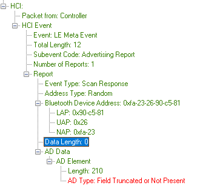

Bluetooth Cases
Table of Contents
1 A2DP
1.1 03587152
- Problem Description
手机连接蓝牙耳机播放音乐，再插入线控耳机，然后拔出线控耳机，手机音乐从扬声 器输出，
预期输出结果：拔出线控耳机后，声音从蓝牙耳机输出
实际输出结果：拔出线控耳机后，声音从扬声器输出（蓝牙耳机还是为连接状态）
- Facts
when plugging in the wired earbuds, AudioService called mBluetoothProfileServiceListener's onServiceDisconnected() callback, which disconnectA2dp() and call makeA2dpDeviceUnavailableNow() at last.
07-11 16:42:15.636 1299 1817 D AudioService: onSetA2dpSinkConnectionState btDevice=22:22:22:33:53:D3state=0 07-11 16:42:15.636 1299 1817 W AudioService: makeA2dpDeviceUnavailableNow:entry
but at the same time, Bluetooth UI's status show that the a2dp profile is connected.
- Problem Analysis
This issue is expected behavior according to current policy, please refer explanation in
ActiveDeviceManager.java.94 * 9.1) If the wired headset is still the selected output device (i.e. the 95 * active device is set to null), the Phone itself will become the output 96 * device (i.e., the active device will remain null). If music was 97 * playing, it will stop.

1.2 03609416
- Problem Description
Android P, 连接A耳机播放视频时，连接B耳机，有一瞬间声音手机外放
- Facts
This is 2nd a2dp connection issue. Audio leaking on DUT spkr in ActiveDevice switch.
//setActiveDevice 07-31 18:06:48.781 5054 5068 W A2dpService: setActiveDevice(1C:48:F9:52:97:C9): previous is B8:AD:3E:BC:BA:A2 07-31 18:06:48.790 5054 5076 W bt_btif : btif_av_handle_event: device 1c:48:f9:52:97:c9 07-31 18:06:48.790 5054 5076 D bt_btif : BTIF_AV_TRIGGER_HANDOFF_REQ_EVT on index 1 07-31 18:06:48.790 5054 5076 D bt_btif : current_playing for index 0: 0 07-31 18:06:48.790 5054 5076 D bt_btif : current_playing for index 1: 1 07-31 18:06:48.790 5054 5076 D bt_btif : Latest playing device index 0 07-31 18:06:48.791 5054 5076 D bt_btif : btif_av_state_started_handler event:BTIF_AV_SUSPEND_STREAM_REQ_EVT flags 0 index =0 07-31 18:06:48.791 5054 5076 W bt_btif : Suspend the AV Data channel 07-31 18:06:48.819 2478 2478 D BluetoothHeadset: setActiveDevice: 1C:48:F9:52:97:C9 07-31 18:06:48.820 5054 5078 D BluetoothActiveDeviceManager: handleMessage(MESSAGE_A2DP_ACTION_ACTIVE_DEVICE_CHANGED): device= 1C:48:F9:52:97:C9 07-31 18:06:48.826 5054 5054 I BluetoothPhonePolicy: removeAutoConnectFromA2dpSink: device B8:AD:3E:BC:BA:A2 PRIORITY_ON //a2dp stop playback on the inactive device 07-31 18:06:48.839 5054 5118 D A2dpStateMachine: Connected process message(B8:AD:3E:BC:BA:A2): STACK_EVENT 07-31 18:06:48.839 5054 5118 D A2dpStateMachine: Connected: stack event: A2dpStackEvent {type:EVENT_TYPE_AUDIO_STATE_CHANGED, device:B8:AD:3E:BC:BA:A2, value1:STOPPED} 07-31 18:06:48.839 5054 5118 I A2dpStateMachine: Connected: stopped playing: B8:AD:3E:BC:BA:A2 07-31 18:06:48.839 5054 5118 D A2dpStateMachine: A2DP Playing state : device: B8:AD:3E:BC:BA:A2 State:PLAYING->NOT_PLAYING 07-31 18:06:48.843 1810 1810 I AudioService: setBtScoActiveDevice: B8:AD:3E:BC:BA:A2 -> 1C:48:F9:52:97:C9 07-31 18:06:48.873 5054 5054 I BluetoothPhonePolicy: setAutoConnectForA2dpSink: device 1C:48:F9:52:97:C9 PRIORITY_AUTO_CONNECT 07-31 18:06:48.893 5054 5054 I BluetoothPhonePolicy: setAutoConnectForHeadset: device 1C:48:F9:52:97:C9 PRIORITY_AUTO_CONNECT 07-31 18:06:48.946 708 953 D audio_hw_primary: adev_set_parameters: enter: B8:AD:3E:BC:BA:A2=;disconnect=32 07-31 18:06:49.319 708 5234 D audio_hw_primary: adev_set_parameters: enter: B8:AD:3E:BC:BA:A2=;disconnect=128 07-31 18:06:49.321 708 5234 D audio_hw_extn: audio_extn_set_anc_parameters: anc_enabled:0 07-31 18:06:49.322 708 5234 D split_a2dp: calling BT stream close 07-31 18:06:49.322 708 5234 W bthost_ipc: audio_stream_close 07-31 18:06:49.322 708 5234 W bthost_ipc: audio_stream_close: Suspending audio stream //audio leak 07-31 18:06:49.494 708 953 D audio_hw_primary: select_devices: out_snd_device(2: speaker) in_snd_device(0: ) 07-31 18:06:49.531 708 953 D audio_hw_primary: enable_snd_device: snd_device(2: speaker) 07-31 18:06:49.531 708 953 D audio_route: Apply path: speaker 07-31 18:06:50.095 708 953 D audio_hw_primary: adev_set_parameters: enter: 1C:48:F9:52:97:C9=;connect=128 07-31 18:06:50.096 708 953 D split_a2dp: Open A2DP output start 07-31 18:06:50.097 708 953 D split_a2dp: calling BT stream open 07-31 18:06:50.097 708 953 W bthost_ipc: audio_stream_open 07-31 18:06:50.097 708 953 W bthost_ipc: a2dp_stream_common_init 07-31 18:06:50.097 708 953 W bthost_ipc: audio_stream_open: Success //re-select to bt-a2dp again 07-31 18:06:50.427 708 708 D audio_hw_primary: select_devices: out_snd_device(32: bt-a2dp) in_snd_device(0: ) - Problem Analysis
between the active switch, audio route to speaker after a short time period. we'd better mute it during this short time.
Subject: [PATCH] Explicitly mute the audio output while switching the A2DP Active Device The mute/unmute of the audio output is needed during the A2DP ActiveDevice switch to avoid audio glitches. Bug: 78152025 Bug: 110441865 Test: Manual - stream with Pandora/Spotify and switch A2DP Active Device Change-Id: I5a233460a07e0d4fffcb4e6cb208d846517f0c1e --- diff --git a/src/com/android/bluetooth/a2dp/A2dpService.java b/src/com/android/bluetooth/a2dp/A2dpService.java index 0641c9f..e883227 100644 --- a/src/com/android/bluetooth/a2dp/A2dpService.java +++ b/src/com/android/bluetooth/a2dp/A2dpService.java @@ -507,7 +507,14 @@ } // Make sure the Audio Manager knows the previous Active device is disconnected, // and the new Active device is connected. + // Also, mute and unmute the output during the switch to avoid audio glitches. + boolean wasMuted = false; if (previousActiveDevice != null) { + if (!mAudioManager.isStreamMute(AudioManager.STREAM_MUSIC)) { + mAudioManager.adjustStreamVolume(AudioManager.STREAM_MUSIC, + AudioManager.ADJUST_MUTE, 0); + wasMuted = true; + } mAudioManager.setBluetoothA2dpDeviceConnectionStateSuppressNoisyIntent( previousActiveDevice, BluetoothProfile.STATE_DISCONNECTED, BluetoothProfile.A2DP, true, -1); @@ -529,6 +536,10 @@ // change, so the Audio Service can reset accordingly the audio // feeding parameters in the Audio HAL to the Bluetooth stack. mAudioManager.handleBluetoothA2dpDeviceConfigChange(mActiveDevice); + if (wasMuted) { + mAudioManager.adjustStreamVolume(AudioManager.STREAM_MUSIC, + AudioManager.ADJUST_UNMUTE, 0); + } } } return true; - 2284854
- Problem Description
It takes extra 6 to 10 seconds to switch active and inactive devices on UI setting
- Facts
Repro Steps:
- Pair with the remote Carkit device 1 (Addr 19), which support delay reporting,
- Pair with the remote headset device 2 (Addr 21), which not support delay reporting. Play a song on DUT
- Switch active device and inactive device on UI
- Problem Analysis
When switch active device, current device is disconnected first and then new device is connected. During disconnection of current device, APM will sleep for a while to wait for output buffers to empty, after this disconnection can be finished and new device connected. Sleep time is about twice the output latency, which is mainly related to sink latency for BT device.
Issue not seen on non-split mode, maybe we should check if there’s any difference for sink latency computation on non-split and split Sink latency in AVDTP Delay reporting is calculated with 1/10 ms. For non-split a2dp path, A2dp hal will convert 1/10 ms to ns via delay_ns = delay_report * 100000. But for split-a2dp path, 1/10 ms is treated as ms incorrectly. So that this 2.358s sink latency send to audio HAL, the real sink latency value should be 0.2358s.
- Problem Description
1.3 03553837
- Problem Description
连接车载蓝牙，手机显示“无手机”或自动断开重连
steps:
- 连接车载蓝牙，显示“无手机”
- 连接上车载后，又会断开重连.
实际输出结果：手机显示“无手机”或自动断开重连
- Facts
this device seems want to connect to us proactively, I see connect confilction happened during connection, and we re-try connection several times.
as for disconnection, I seems the carkit didn't poll us as master, so connection timeout.
2,342 Event VS_Host_Report_Event 18 21 00:00:05.093716 7/1/2018 12:15:25.214170 PM 2,359 Event VS_Host_Report_Event 18 21 00:00:00.723688 7/1/2018 12:15:32.698388 PM 2,367 Event Disconnection Complete Success 0x000a 4 7 00:00:00.000057 7/1/2018 12:15:32.705241 PM
- Problem Analysis
there are three errors in current logs:
- after dut starts to connect rfcomm for hfp, remote will
disconnect it immediately. this should be remote issue. please
let vivo try to add this device to the
BlacklistDeviceAddrForNotRetryingblacklist271 Not Extended remote disconnect rfcomm Initiator Started C/R Sequence Master 2 0x06 3 DM 1 13 00:00:00.007939 7/1/2018 12:14:02.474383 PM
@HeadsetStatemachine 173 // Blacklist remote device addresses going into bad state if we retry 174 private static final String [] BlacklistDeviceAddrForNotRetrying = 175
- after hfp is connected, connection timeout happened. this may be caused by error 3)
Disconnection Complete connection timeout 1,087 Event Disconnection Complete Disconnection Complete Success 7/1/2018 12:14:27.559153 PM 0x0003 4 7 00:00:00.000097
- dut respond supporting cover art to remote even though the
avrcp version of dut is avrcp 1.4. it cause that the l2cap
status of remote goes to bad state.

- Notes
In our OMR1(and P as well) implementation, DUT’s default version is 1.4 + Browsing. This is the default value selected in DEV UI as well. But during SDP registration the DUT’s record created is 1.6 + Browsing + CA.
Now, when first time remote is paired and connected, conf file is updated with min(DUT’s default v1.4, remote ver). For sending SDP records to remote, the registered version(v1.6) is then overwritten by this version saved in conf file and also BR and CA bits are modified if needed. After sending the records to remote, DUT’s registered version is again made v1.6+BR+CA and saved locally. This is the logic which is followed in OMR1 and P.
Registered version of DUT is always = v1.6+BR+CA. Default version of DUT = v1.4 + BR Saved entry of remote in conf file = minimum of DUT’s default (v1.4) and remote’s version. DUT’s SDP record shown to remote = 1.3 if no conf entry OR conf file entry value.
- after dut starts to connect rfcomm for hfp, remote will
disconnect it immediately. this should be remote issue. please
let vivo try to add this device to the
2 HFP
3 PBAP
3.1 03590231
- Problem Description
Android P, 连接49号车载蓝牙，高概率出现无法同步联系人
- Facts
from the logs, carkit only query the phonebook size on the DUT, but don't proceed to download it. while testing with the reference phone, it will download the phonebook contacts.
carkit query the phonebook size with the following request:

for query, the
Max List Countparameter is 0.to download the phonebook contents, carkit should sent another request with
Max List Countparameter not equal to 0. but it did't, that's not expected. - Problem Analysis
for this issue, we should check PBAP version and supported feature first, and then check other differences.
DUT logs:

Reference phone logs:

there is no differene for the Supported Repositories attribute. so we need to compare the other reason.
there maybe some other factor which let the carkit don't send download phonebook content from the DUT.
here is the difference:
when query phonebook size in SIM card, DUT respond with the value of 0 when SIM card has no contacts.

while reference phone respond with the value of 1.

after change the retun value from 0 to 1, issue is resolved.
plus, if the carkit don't request phonebook content from SIM card, you can check the attribute of Supported Repositories from the SDP response to the carkit in which bit 1 represent wether SIM card Phonebook is supported or not.
4 BLE
4.1 03451122
- Problem Description
使用美居APP无法连接蓝牙电子秤
- Facts
DUT can't search the BLE device.
- Problem Analysis

the format of the LE Advertising Data is invalid, so the data is dropped at the stack level.
this valid check is introduced from Android O. In Android N, no such check.
Subject: [PATCH] Remove bytes after first zero length field in legacy advertisements This is for compatibility with many existing old devices, that have non-zero bytes after zero length field. This is currently causing advertisements to be dropped, rendering those devices invisible. Bug: 68907583 Test: AdvertiseDataParserTest.RemoveTrailingZerosMalformed Change-Id: Ib51950f7e0c6a2771f56c6f69108fa10f2517f38 (cherry picked from commit 5a290f877f5acb29e78533ad45351510cff87497) --- stack/btm/btm_ble_gap.cc | 3 ++- stack/include/advertise_data_parser.h | 7 +------ stack/test/ad_parser_unittest.cc | 30 ++++++++++++++++++++++++++++-- 3 files changed, 31 insertions(+), 9 deletions(-) diff --git a/stack/btm/btm_ble_gap.cc b/stack/btm/btm_ble_gap.cc index 8037976..845c8c4 100644 --- a/stack/btm/btm_ble_gap.cc +++ b/stack/btm/btm_ble_gap.cc @@ -2014,7 +2014,8 @@ static void btm_ble_process_adv_pkt_cont( bool is_start = ble_evt_type_is_legacy(evt_type) && is_scannable && !is_scan_resp; - if (is_start) AdvertiseDataParser::RemoveTrailingZeros(tmp); + if (ble_evt_type_is_legacy(evt_type)) + AdvertiseDataParser::RemoveTrailingZeros(tmp); // We might have send scan request to this device before, but didn't get the // response. In such case make sure data is put at start, not appended to diff --git a/stack/include/advertise_data_parser.h b/stack/include/advertise_data_parser.h index 473b979..fb5f7f7 100644 --- a/stack/include/advertise_data_parser.h +++ b/stack/include/advertise_data_parser.h @@ -57,12 +57,7 @@ class AdvertiseDataParser { // end of the packet. Otherwise i.e. gluing scan response to advertise // data will result in data with zero padding in the middle. if (len == 0) { - size_t zeros_start = position; - for (size_t i = position + 1; i < ad_len; i++) { - if (ad[i] != 0) return; - } - - ad.erase(ad.begin() + zeros_start, ad.end()); + ad.erase(ad.begin() + position, ad.end()); return; }
4.2 03565631
- Problem Description
市场反馈：连接不上小米手环
- Facts
Compare the normal logs and abnormmal logs, it seems that in normal logs, we don't see Start Enpryption Procedure happened, while in the abnormal casse, I see host send HCI Start Encryption command, but failed.
369 Command 0x2019 Low Energy HCI_LE_Start_Encryption 2018/7/2 11:59:49.298495 28 32 00:00:00.007311 370 Event 0x2019 Low Energy HCI_LE_Start_Encryption Command Status Success 2018/7/2 11:59:49.304905 4 7 00:00:00.006410 384 Event Encryption Change Connection Timeout 2018/7/2 11:59:54.599536 0x0002 4 7 00:00:00.002959 385 Event Disconnection Complete Success 2018/7/2 11:59:54.599963 0x0002 4 7 00:00:00.000427
- Problem Analysis
The snoops having the extended logging shows the SLAVE device ( other side) did initiated START_ENCR_REQ but doesnt reply to DUT START_ENCR_RSP.
Expected Procedure as per spec:
Slave –> START_ENC_REQ Master–> START_ENC_RSP Slave ->>START_ENC_RSP -————> Here the Encryption proceedure is complete.
Now both side encrypted packets are expected. The slave reply in this scenario is missing.
After sessionKey has been calculated, the Link Layer of the slave shall send an LL_START_ENC_REQ PDU. This packet shall be sent unencrypted, and the Link Layer shall be set up to receive an encrypted packet in response. When the Link Layer of the master receives an LL_START_ENC_REQ PDU it shall send an LL_START_ENC_RSP PDU. This PDU shall be sent encrypted and set up to receive encrypted.
When the Link Layer of the slave receives an LL_START_ENC_RSP PDU it shall transmit an LL_START_ENC_RSP PDU. This packet shall be sent encrypted. When the Link Layer of the master receives the LL_START_ENC_RSP PDU, the connection is encrypted. The Link Layer can now send LL Data PDUs and LL Control PDUs; these PDUs will be encrypted.
The proof is from the snoop Extended logs.
QCA Debug Logs: Log ID: OTA LE CTRL RX PDU Log Format: FMT_PACKET Log Level: LOG_HIGH TimeStamp: 0x0a142204 Length: 0x0005 LE Ctrl Rx PDU Info Handle: 3 TxACK Req: 0 PDU Length: 1 LE LL: Control Pkt: LL_START_ENC_REQ QCA Debug Logs: Log ID: OTA LE CTRL TX PDU Log Format: FMT_PACKET Log Level: LOG_HIGH TimeStamp: 0x0a142216 Length: 0x0009 LE Ctrl Tx PDU Info Handle: 3 TxACK Req: 0 PDU Length: 1 LE LL: Control Pkt: LL_START_ENC_RSP EnQ TimeStamp: 0x0a142213 QCA Debug Logs: Log ID: LOG_ID_LLM_LE_ENC_SM Log Format: FMT_PACKET Log Level: LOG_HIGH TimeStamp: 0x0a142269 Length: 0x0004 LE Encr SM NewState: CMs_LE_ENCR_W4_START_ENC_RSP_I Event: CMeLE_ENCR_EVENT_RX_START_ENC_REQ Handle: 3 CurrState: CMs_LE_ENCR_W4_START_ENC_REQ
After this there are no more LL PDUs exchanged and there is Connection Timeout.
From the Peripheral side it seems there is some timing issue with Encryption start hence when there is delay there is no issue.
we suggested to set set BLE_DELAY_REQUEST_ENC to TRUE. and thus Encryption proceedure will be initiated by DUT not from remote side.
there is timing case, if we allow Peripheral to initiated Encryption.